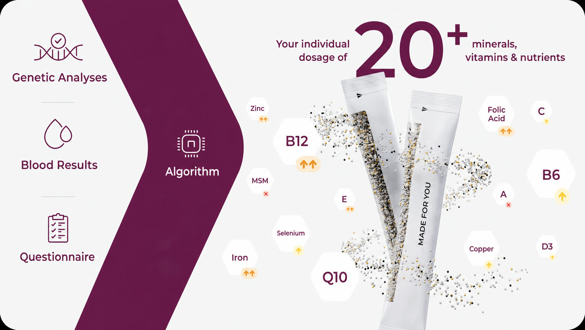
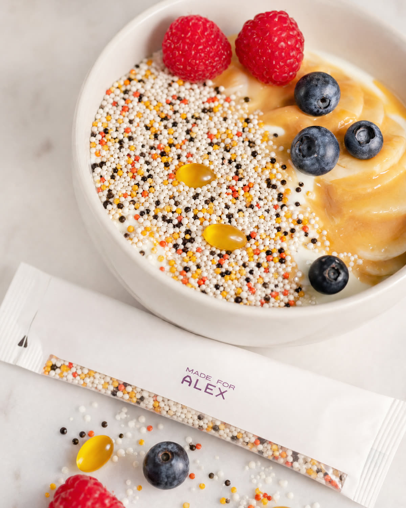
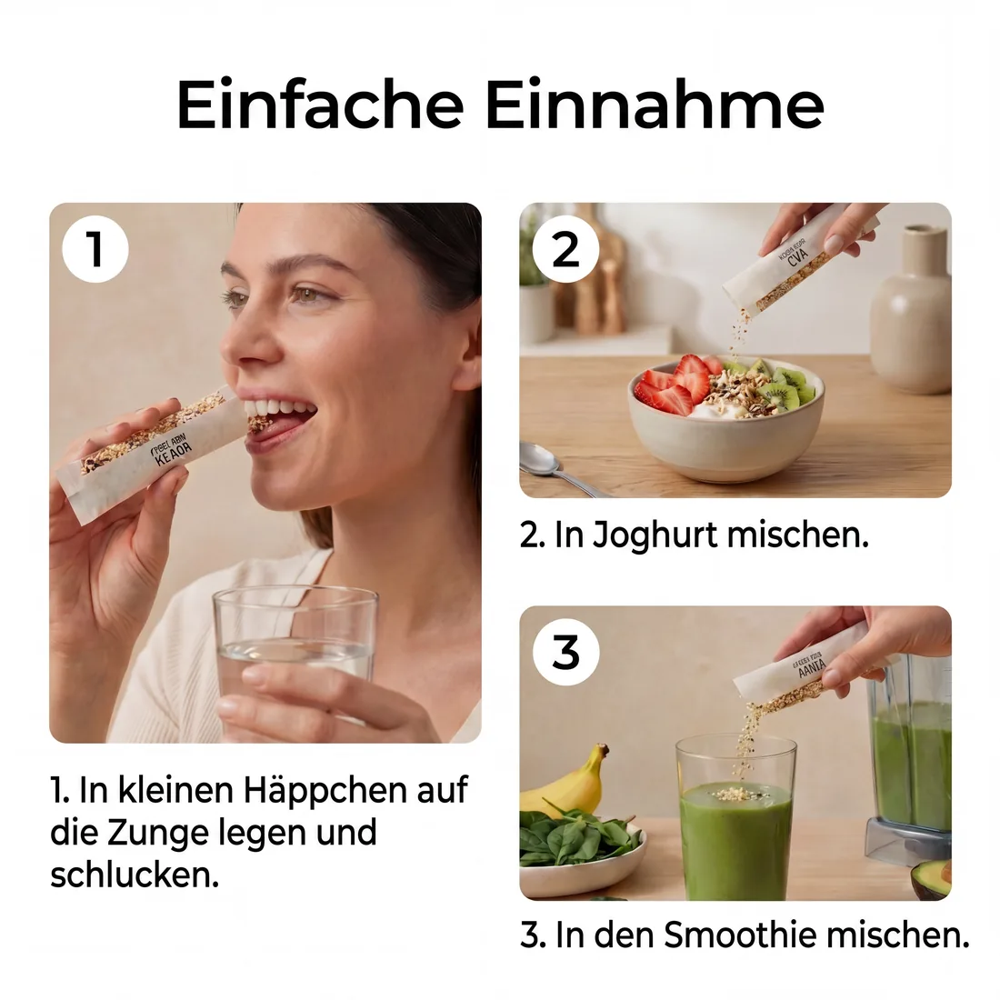
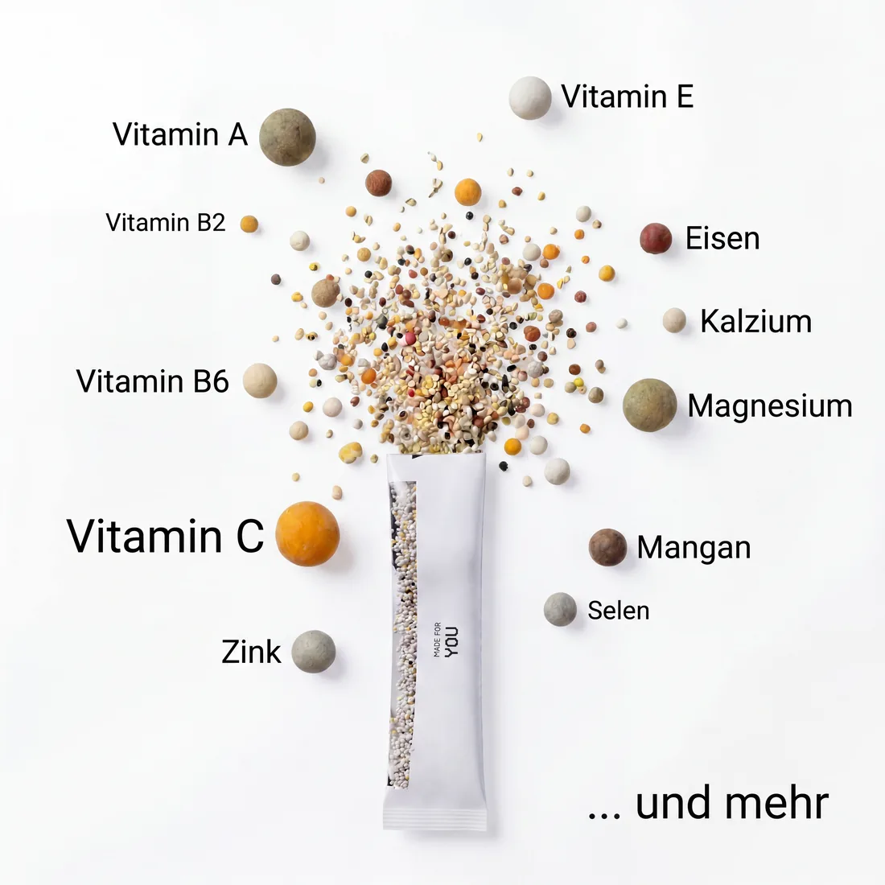

Generic multivitamins guess. Novogenia doesn’t — a person’s genes decide what their body really needs, produced as one daily, micro-dosed mixture.
Watch Dr. Daniel Wallerstorfer explain how a person’s genes decide what their body really needs — and how we turn that into one daily, micro-dosed mixture.
Three inputs feed one algorithm — and out comes a mixture micro-dosed to exactly what your body needs.


Whether you activate vitamin D, methylate folate, absorb iron or convert Coenzyme Q10 is largely genetic. Two people taking the identical pill can end up with very different levels in their blood — which is why a one-size supplement can never be optimal.



Every ingredient, its exact form, where it’s sourced, what it does, how it’s made and how it’s certified. Tap any one to open the full detail.
People whose genes meant the off-the-shelf dose was wrong — too little, the wrong form, or useless to their body.
The personal stories below are individual customer experiences and opinions — not guaranteed results, and not medical claims.
Your genetic analysis decides the form and the dose of each nutrient — then it’s mixed and filled in our own facility and delivered as a single daily sachet.
Become a partner →From a saliva sample to a finished, micro-dosed sachet — produced in our EU facility and shipped to your customer. No production line to build, no startup costs.
Become a reseller →Science: Today there are already about 4 million scientific publications that have studied the effects of genes on the human body. That genes influence body weight, the effectiveness of certain strategies and the ability to handle certain nutrients is supported by multiple scientific studies for each gene — the genetic traits determined by our analyses are therefore considered scientifically confirmed.
Recommendations: The adaptations of micronutrient dosing, cosmetic formulation and dietary or lifestyle recommendations derived from these findings have not yet been confirmed by randomised, placebo-controlled studies for every genetic effect. They are therefore to be understood as logical conclusions — not scientifically proven outcomes — and do not replace medical advice, diagnosis or treatment.
Supplements: Personalized supplements are composed as a logical conclusion from a genetic analysis and use only EFSA-approved nutrient claims. They are not medicines and do not replace a balanced diet or medical advice.